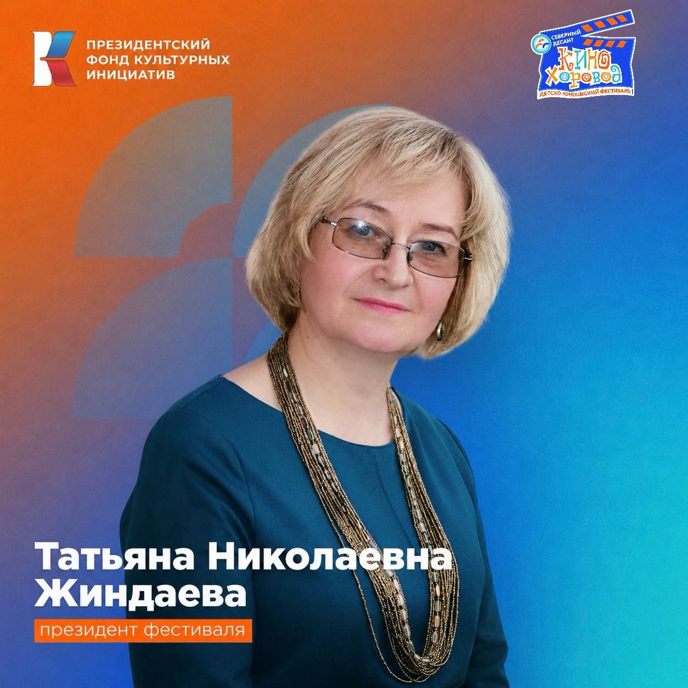
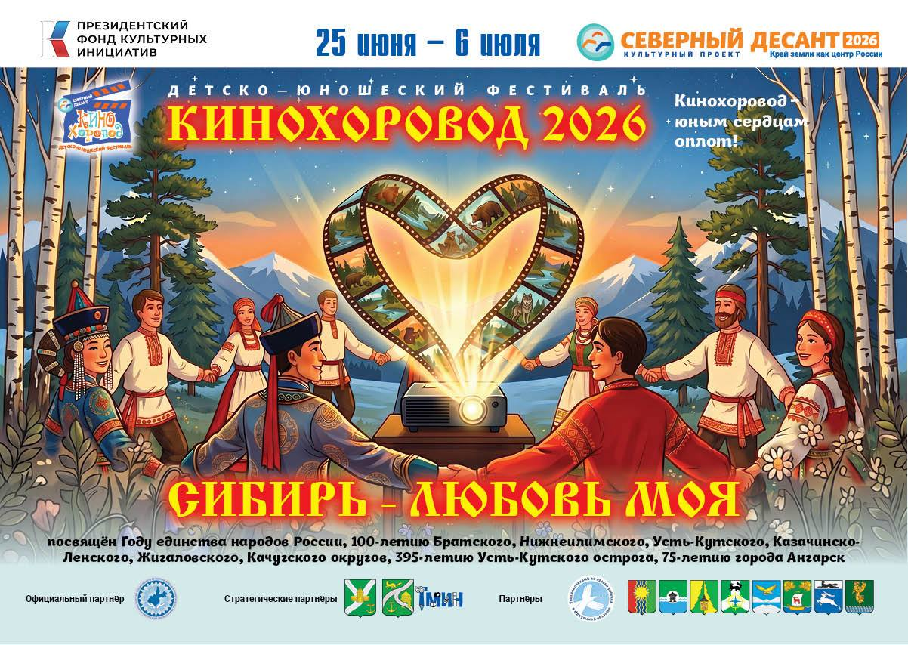
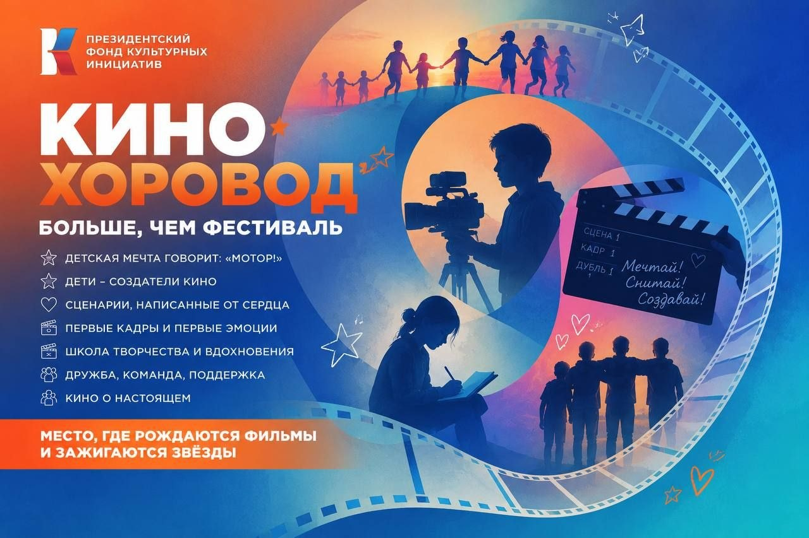
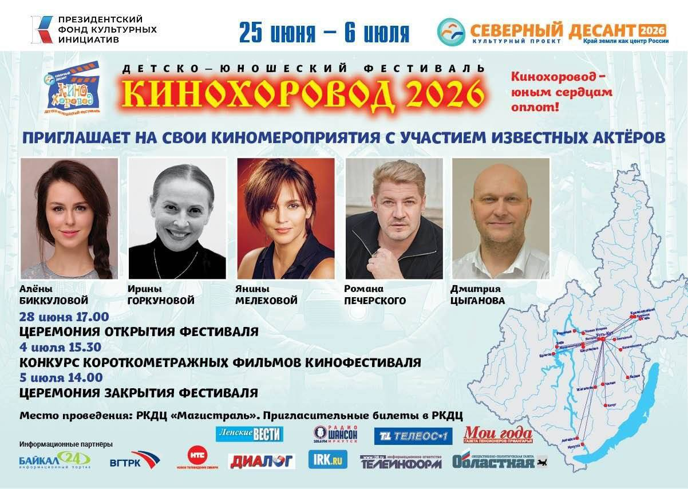
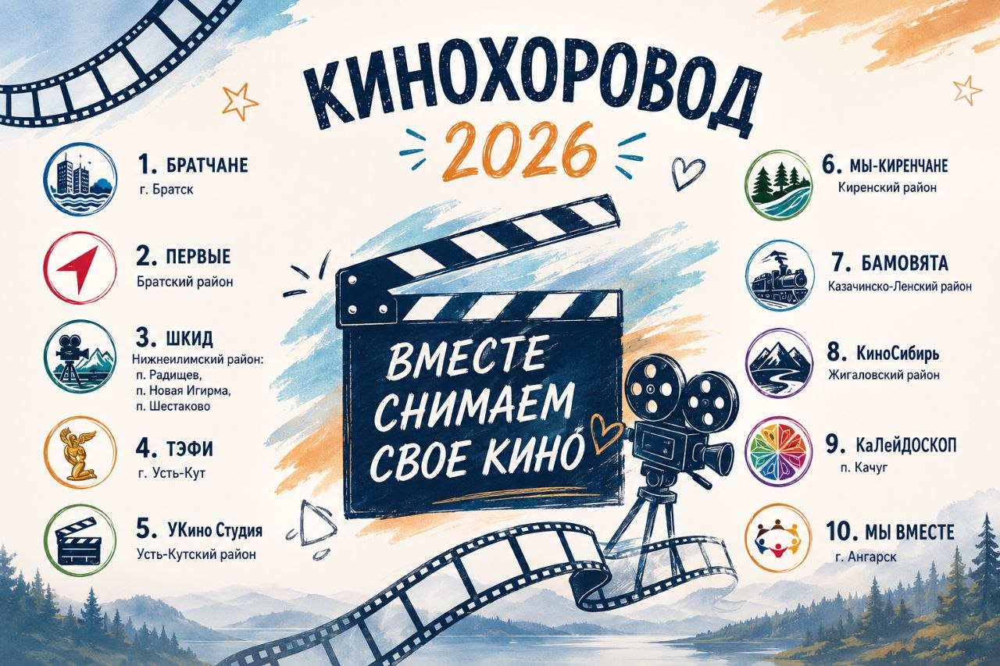
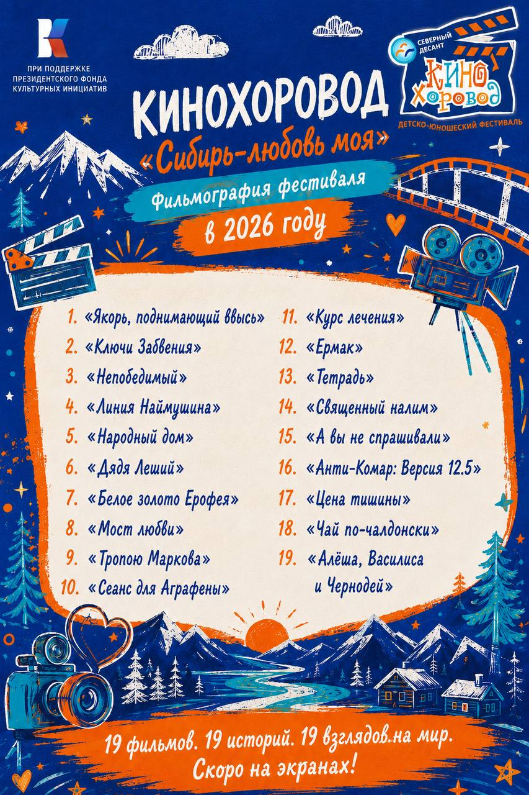

КИНОХОРОВОД 2026: ПОДГОТОВКА
С 31 января начал свою работу сценарный курс фестиваля "КиноХоровод-2026" -
"Пишем своё кино". В нем участвуют школьники из 10 крупных муниципальных округов севера
Иркутской области, около 130 человек. Вместе со своими кураторами-наставниками они готовят
к питчингу (отбору) порядка 40 сценариев. Особенно активны дети Нижнеилимского
(команда "ШКИД") и Качугского (команда "КаЛеЙДОСКОП") районов. В их "портфелях" по 10
киноновелл. У остальных команд также по несколько работ. "Непросто будет отбирать
сценарии - одна работа лучше другой,- говорит автор и руководитель сценарного курса
Анна Харлампиевна Харламенко. - Ребята очень стараются. Жюри предстоит сделать сложный
выбор".
Напомним, что нынешний фестиваль посвящен Году единства народов России, 100-летним юбилеям нескольких северных территорий - его участников. Его тема "Сибирь - любовь моя!" позволяет отразить самые разные грани жизни этой прекрасной земли.
Напомним, что нынешний фестиваль посвящен Году единства народов России, 100-летним юбилеям нескольких северных территорий - его участников. Его тема "Сибирь - любовь моя!" позволяет отразить самые разные грани жизни этой прекрасной земли.
КИНОХОРОВОД. СИБИРЬ — ЛЮБОВЬ МОЯ!
ЦЕЛЬ ПРОЕКТА:
Исследовать многогранную историю, культуру и природу Сибири через создание
собственных творческих работ (рассказов, сценариев, видео-зарисовок).
ЗАДАЧИ:
· Найти и изучить уникальные материалы и живые свидетельства.
· Понять вклад сибиряков в историю страны.
· Осознать ценность и хрупкость сибирской природы.
· Развивать навыки исследования, интервьюирования и творческого воплощения идей.
· Понять вклад сибиряков в историю страны.
· Осознать ценность и хрупкость сибирской природы.
· Развивать навыки исследования, интервьюирования и творческого воплощения идей.
❗️ТЕМЫ ❗️
ДЛЯ ВАШИХ ИСТОРИЙ (с подробным содержанием)
✅ Тема: «СИЛЬНЫЕ ДУХОМ. ЛИЧНОСТИ, ИЗМЕНИВШИЕ СИБИРЬ»
СОДЕРЖАНИЕ:
Исследуйте биографию одного из выдающихся сибиряков.
Попробуйте найти не только общеизвестные факты, но и интересную личную историю, черту характера, момент принятия важного решения.
Что двигало этим человеком?
Как его работа или творчество повлияли на ваш родной край или всю страну?
Попробуйте найти не только общеизвестные факты, но и интересную личную историю, черту характера, момент принятия важного решения.
Что двигало этим человеком?
Как его работа или творчество повлияли на ваш родной край или всю страну?
ПРИМЕРЫ ЛИЧНОСТЕЙ:
⭐️ ЕРМАК ТИМОФЕЕВИЧ
- не просто «покоритель земель сибирских», ах «Каким был человек, решившийся вести свой отряд в полную
неизвестность, навстречу суровой природе и сильному противнику?».
⭐️ ФЕДОР УГЛОВ
- не просто «выдающийся хирург», а «Какой внутренний стержень помогал ему проводить
сложнейшие операции и ставить рекорды долголетия в профессии, требующей огромного
напряжения?».
⭐️ ВАЛЕНТИН РАСПУТИН
- не просто «писатель и публицист», а «Как в его произведениях, таких как
«Прощание с Матерой», отразилась боль за уходящую под воду деревенскую Русь и вера
в нравственную силу человека?».
⭐️ АЛЕКСАНДР ВАМПИЛОВ
- не просто «писатель, драматург», а «Как в его пьесах, полных тонкого психологизма
и юмора, отразилась душа сибирской интеллигенции, и какая трагическая судьба
оборвала его яркий талант?»
⭐️ ГЕОРГИЙ ЗАМАРАТСКИЙ И ЕВГЕНИЙ ЕВТУШЕНКО
- не просто «поэты», а «Как сибирские просторы и история нашей страны нашли отклик
в их стихах – от гражданского пафоса Евтушенко до лирических размышлений
Замаратского?».
⭐️ИВАН НАЙМУШИН
- не просто «гидростроитель, Герой Соцтруда», а «Каким был руководитель, сумевший
организовать строительство гигантской Братской ГЭС, одной из самых мощных в мире,
в сложнейших условиях?».
⭐️ БОРИС ВОЛЫНОВ
- не просто «космонавт», а «Как сибирский характер помогал ему, одному из первых
покорителей космоса, справляться с невесомостью и земными трудностями?».
⭐️ АНАТОЛИЙ БАЙКОВ
- не просто «театральный режиссер, БАМовец», а «Как романтика и суровая реальность
строительства БАМа рождали новое искусство, и каким был театр в вагончике посреди
тайги?».
⭐️ ЛЕОНИД ГАЙДАЙ
- не просто «кинорежиссер», а «Как сибирский характер и особый юмор нашли отражение
в его всенародно любимых комедиях, которые стали классикой кинематографа?».
⭐️ ГЕРОИ ВОВ И ТРУДА
- не просто «герои», а «Какие конкретные подвиги на фронте или у станка совершили
ваши земляки? В чем заключался их ежедневный героизм?».
⭐️ МИТРОПОЛИТ ИННОКЕНТИЙ (ВЕНИАМИНОВ)
- не просто «просветитель и миссионер», а «Каким был его путь через бескрайние
просторы Сибири и Аляски, как он создавал азбуки для коренных народов и строил
храмы в самых отдаленных уголках?».
✅ Тема: «ВРЕМЯ БОЛЬШИХ СВЕРШЕНИЙ. ВЕЛИКИЕ СТРОЙКИ И СОБЫТИЯ»
СОДЕРЖАНИЕ
Изучите ключевое событие для вашего района или Сибири в целом (стройка ГЭС, БАМа,
завода, основание города).
Ответьте на вопросы:
Как это событие изменило жизнь людей?
С какими трудностями сталкивались первостроители?
Какие легенды и истории связаны с этой стройкой?
Ответьте на вопросы:
Как это событие изменило жизнь людей?
С какими трудностями сталкивались первостроители?
Какие легенды и истории связаны с этой стройкой?
ПРИМЕРЫ
🔆 «История одной семьи на стройке Братской ГЭС»,
«Как появился и вырос наш город/поселок?»
«День, когда на комбинате получили первую продукцию»
«Как появился и вырос наш город/поселок?»
«День, когда на комбинате получили первую продукцию»
✅ Тема: «ЖИВАЯ ПАМЯТЬ. ЛЕГЕНДЫ, ПРЕДАНИЯ И АРХИВНЫЕ ТАЙНЫ»
СОДЕРЖАНИЕ
🔎 Станьте детективами прошлого! Найдите в местных архивах, музеях или газетах
необычный исторический факт, старую фотографию с загадочной историей, местную
легенду о кладе, озерном чудовище или основании вашего села.
🔎Попробуйте отделить правду от вымысла или творчески обыграть эту историю.
🔎Попробуйте отделить правду от вымысла или творчески обыграть эту историю.
✅ Тема: «ДУША НАРОДА.ОБЫЧАИ, ОБРЯДЫ И ТРАДИЦИИ»
СОДЕРЖАНИЕ
Опишите традиционный обряд народов, живущих в вашей местности (русских, бурят,
эвенков, татар и др.). Это может быть свадебный обряд, национальный праздник,
обряд по случаю рождения ребенка или проводов в армию и др.
Почему в нем важна каждая деталь? Что он символизирует?
Как эти традиции сохраняются сегодня?
Почему в нем важна каждая деталь? Что он символизирует?
Как эти традиции сохраняются сегодня?
✅ Тема: «СОКРОВИЩА РОДНОГО СЛОВА. ЯЗЫК И УНИКАЛЬНЫЕ СЛОВА»
СОДЕРЖАНИЕ
📕Соберите «словарик» местных слов и выражений, которые не поймет житель
другой области. Это могут быть диалектизмы, заимствования из языков коренных
народов или особые профессиональные термины (например, у геологов или лесорубов). Исследуйте происхождение этих слов, их точное значение и составьте с ними небольшие рассказы или диалоги.
✅ Тема: «СИЛА И КРАСОТА. ПРИРОДА СИБИРИ — ДРУГ И КОРМИЛЕЦ»
СОДЕРЖАНИЕ
🍀 Расскажите о красоте сибирской природы (тайга, степи, озера, горы).
🍀Объясните, как она помогала людям выживать в суровые времена (охотарыбалка, кедровый орех, лекарственные травы).
🍀 Покажите примеры бережного отношения к природе (заповедники, лесничества, переработка отходов).
🍀Или раскритикуйте случаи хищнического отношения (вырубка лесов, загрязнение рек, браконьерство).
🍀Что мы можем сделать, чтобы сохранить природу для потомков?
🍀Объясните, как она помогала людям выживать в суровые времена (охотарыбалка, кедровый орех, лекарственные травы).
🍀 Покажите примеры бережного отношения к природе (заповедники, лесничества, переработка отходов).
🍀Или раскритикуйте случаи хищнического отношения (вырубка лесов, загрязнение рек, браконьерство).
🍀Что мы можем сделать, чтобы сохранить природу для потомков?
ГДЕ ИСКАТЬ ИСТОРИИ?
· МУЗЕИ
Не только крупные, но и маленькие школьные или краеведческие музеи. Поговорите
со смотрителями.
· БИБЛИОТЕКИ
Особенно краеведческие отделы. Подшивки старых газет — это настоящая машина времени!
· АРХИВЫ
Там хранятся документы, фотографии, карты.
ЛЮДИ — живые свидетели
- Старшее поколение (бабушки, дедушки, их друзья)
- Учителя истории и краеведы
- Журналисты местных газет и телеканалов
- Хранители традиций (сказители, мастера декоративно-прикладного искусства, участники фольклорных ансамблей)
- Учителя истории и краеведы
- Журналисты местных газет и телеканалов
- Хранители традиций (сказители, мастера декоративно-прикладного искусства, участники фольклорных ансамблей)
· ИНТЕРНЕТ
Используйте его после живого общения, чтобы проверить и дополнить информацию.
Ищите оцифрованные архивы, воспоминания, специализированные краеведческие сайты.
Ищите оцифрованные архивы, воспоминания, специализированные краеведческие сайты.
❗ВАЖНЫЙ СОВЕТ
Ваша задача — не просто пересказать факты, а ОЖИВИТЬ ИСТОРИЮ.
Представьте себя на месте того человека, о котором вы пишете.
Что он видел?
Что чувствовал?
О чем мечтал?
Используйте диалоги, описывайте детали, ищите личную, человеческую историю внутри большого события.
Представьте себя в истории, которую пишете
Представьте себя на месте того человека, о котором вы пишете.
Что он видел?
Что чувствовал?
О чем мечтал?
Используйте диалоги, описывайте детали, ищите личную, человеческую историю внутри большого события.
Представьте себя в истории, которую пишете
ИТОГИ СЦЕНАРНОГО КУРСА «ПИШЕМ СВОЁ КИНО» 31.01 – 24.04.2026
Здравствуйте, любимые кинохороводовцы! В таблице ниже – итоги конкурса
сценариев Детско-юношеского фестиваля «КиноХоровод» 2026 года.
В курсе «Пишем своё кино» участвовало 154 человека, писалось 44 сценария, до финиша дошли 35!!! Спасибо всем - нашей любимой Анне Харлампиевне Харламенко, кураторам-наставникам и, конечно, юным киноделам и их родителем за такую большую, кропотливую и ответственную работу! С каждым годом сценарный курс становится креативнее, познавательнее, красочнее, результативнее. От себя лично, от дирекции ДЮФ КХ и от юных сценаристов благодарю Анну Харлампиевну Харламенко за эту блестящую обучающую программу, за огромный труд, который она ежегодно вкладывает в наш фестиваль, создавая своим курсом его фундамент.
Тема «КиноХоровода-26» посвящена Сибири. Она раскрыта всесторонне и разнообразно, с уважением и любовью к малой родине. Существующий жанровый арсенал пополнился новыми видами - хоррор («Договор», «КиноСибирь»); легенда («Забытая невеста», «ШКИД»); сказка («Алеша, Василиса и Чернодей», «КаЛеЙДОСКОП»). И это, безусловно, тоже большой шаг вперед.
Очень порадовали первокурсники. Держу за вас кулачки, дорогие новички, чтобы вы и дальше сохранили этот запал и влюбленность в кино! Дорогие наши третьекурсники! Вы становитесь настоящими мастерами. Совершенствуйтесь, подрастайте дальше вместе с «КиноХороводом». У вас появляются дополнительные знания, которые всегда пригодятся в жизни.
В составе жюри работали 8 человек – дирекция и партнеры: Т.Н. Жиндаева, Н.В. Носкова, Е.А. Кузнецова, А.Н. Верюжская, А.А. Селезнева, И.Ю. Горкунова, А.В. Стародубцев, М.И. Абдурашитов. Совещательный голос – А.Х. Харламенко. С подробными результатами голосования познакомитесь самостоятельно в приведенной таблице. Кратко итоги следующие (первая оценка – жюри, вторая – читатели):
Рада за вас от души! Особой похвалы достойны наши новички – ангарская команда «Мы – вместе!». Они проявили исследовательский талант и нашли отличную тему – о купцах-моряках Иркутской губернии, интересно подали её через призму сегодняшних дней.
Остальные 7 команд представили от 2-х до 11 киноработ. И все потрясающие! Поэтому жюри складывало этот «кубик-рубик» целых 10 дней! Приносим свои извинения за такую невольную затяжку итогов и благодарим за терпение.
Поздравляю создателей победных сценариев! Вы – большие молодцы!!! Сделали прекрасные работы. Теперь задача – тщательно подготовить их к съемочному процессу: актёров, реквизит, музыку, оформление, локации… За два «КиноХоровода» есть опыт, знания, навыки. Но только расклад сценариев «по полочкам» вместе А.Х. Харламенко, который она уже начала в группах, обязательные созвоны с главным режиссёром А.А. Селезневой помогут сделать качественные, интересные и конкурентоспособные короткометражки. Возможно, за счет такой глубокой проработки, кропотливого предпродакшена у команд на фестивале высвободится время для съёмок еще одного фильма из своего арсенала… Все в ваших руках, друзья!
По традиции, у нас есть три кинокартины, судьбу которых определили читатели. Нынче это:
Поздравляю команды и авторов этих работ! Молодцы! Теперь нужно оправдать доверие, которые выразили вам наши читатели.
В связи с тем, что некоторые участники фестиваля («УКИНОСТУДИЯ», «ШКИД» и др.) представлены детьми разных населённых пунктов, которые имеют собственные сценарии, за их кураторами-наставниками остается право использовать внутренние резервы команды для производства дополнительных короткометражек. Как это можно сделать - обсуждаем индивидуально.
Еще раз поздравляю А.Х. Харламенко, все команды и кураторов-наставников с блестящим завершением курса «Пишем свое кино», благодарю за активность и конструктивность! Вами, друзья, задана очень высокая планка. Надеюсь, что фильмы получатся такого же высокого класса.
Режиссёрский курс «Камера: мотор!» открывается 27 апреля под руководством главного режиссёра Александры Александровны Селезневой. Помогать готовить сценарии к съёмкам, по возможности, также будет главный сценарист А.А. Харламенко. Техническую поддержку осуществляет Ангелина Бубнова. В добрый путь! Полного ветра нашим алым парусам!
С уважением и любовью – президент фестиваля Т.Н. Жиндаева.
Детско-юношеский фестиваль «КиноХоровод. Сибирь – любовь моя» пройдет с 25 июня по 6 июля в г. Усть-Кут Иркутской области. Посвящен Сибири -100-летним юбилеям муниципальных округов-партнеров фестиваля и Году единства народов России. Участвуют школьники 7-18 лет, 10 команд из 10 муниципальных образований: г. Братск, Братский района (юбиляр), Нижнеилимский района (юбиляр), УКМО (юбиляр), Усть-Кут (395 лет, юбиляр), Киренский район, Казачинско-Ленский район (юбиляр), Жигаловский район (юбиляр), Качугский район (юбиляр), г. Ангарск.
В курсе «Пишем своё кино» участвовало 154 человека, писалось 44 сценария, до финиша дошли 35!!! Спасибо всем - нашей любимой Анне Харлампиевне Харламенко, кураторам-наставникам и, конечно, юным киноделам и их родителем за такую большую, кропотливую и ответственную работу! С каждым годом сценарный курс становится креативнее, познавательнее, красочнее, результативнее. От себя лично, от дирекции ДЮФ КХ и от юных сценаристов благодарю Анну Харлампиевну Харламенко за эту блестящую обучающую программу, за огромный труд, который она ежегодно вкладывает в наш фестиваль, создавая своим курсом его фундамент.
Тема «КиноХоровода-26» посвящена Сибири. Она раскрыта всесторонне и разнообразно, с уважением и любовью к малой родине. Существующий жанровый арсенал пополнился новыми видами - хоррор («Договор», «КиноСибирь»); легенда («Забытая невеста», «ШКИД»); сказка («Алеша, Василиса и Чернодей», «КаЛеЙДОСКОП»). И это, безусловно, тоже большой шаг вперед.
Очень порадовали первокурсники. Держу за вас кулачки, дорогие новички, чтобы вы и дальше сохранили этот запал и влюбленность в кино! Дорогие наши третьекурсники! Вы становитесь настоящими мастерами. Совершенствуйтесь, подрастайте дальше вместе с «КиноХороводом». У вас появляются дополнительные знания, которые всегда пригодятся в жизни.
В составе жюри работали 8 человек – дирекция и партнеры: Т.Н. Жиндаева, Н.В. Носкова, Е.А. Кузнецова, А.Н. Верюжская, А.А. Селезнева, И.Ю. Горкунова, А.В. Стародубцев, М.И. Абдурашитов. Совещательный голос – А.Х. Харламенко. С подробными результатами голосования познакомитесь самостоятельно в приведенной таблице. Кратко итоги следующие (первая оценка – жюри, вторая – читатели):
Безальтернативные фильмы, принятые к производству:
1. «МЫ – ВМЕСТЕ!», г. Ангарск, к/м «ЯКОРЬ, ПОДНИМАЮЩИЙ ВВЫСЬ», 272/11
2. «ПЕРВЫЕ», Братский р-н, к/м «КЛЮЧИ ЗАБВЕНИЯ», 261/12
3. «МЫ - КИРЕНЧАНЕ!», Киренский р-н, к/м «НЕПОБЕДИМЫЙ», 289/25
Рада за вас от души! Особой похвалы достойны наши новички – ангарская команда «Мы – вместе!». Они проявили исследовательский талант и нашли отличную тему – о купцах-моряках Иркутской губернии, интересно подали её через призму сегодняшних дней.
Остальные 7 команд представили от 2-х до 11 киноработ. И все потрясающие! Поэтому жюри складывало этот «кубик-рубик» целых 10 дней! Приносим свои извинения за такую невольную затяжку итогов и благодарим за терпение.
Лучшими работами среди альтернативных признаны:
4. «БРАТЧАНЕ», г. Братск, к/м «ЛИНИЯ НАЙМУШИНА», 279/27
5. «ШКИД», Нижнеилимский р-н, к/м «НАРОДНЫЙ ДОМ», 272/19
6. «УКИНОСТУДИЯ», Усть-Кутский р-н, к/м ««ДЯДЯ ЛЕШИЙ», 283/14
7. «ТЕФИ», г. Усть-Кут, к/м «БЕЛОЕ ЗОЛОТО ЕРОФЕЯ», 283/68
8. «БАМОВЯТА», Казачинско-Ленский р-н, к/м «МОСТ ЛЮБВИ», 270/0
9. «КИНОСИБИРЬ», Жигаловский р-н, к/м «ЦЕНА ТИШИНЫ», 274/11
10. «КАЛЕЙДОСКОП», Качугский р-н, к/м «КАНДАЛЫ», 283/24
Поздравляю создателей победных сценариев! Вы – большие молодцы!!! Сделали прекрасные работы. Теперь задача – тщательно подготовить их к съемочному процессу: актёров, реквизит, музыку, оформление, локации… За два «КиноХоровода» есть опыт, знания, навыки. Но только расклад сценариев «по полочкам» вместе А.Х. Харламенко, который она уже начала в группах, обязательные созвоны с главным режиссёром А.А. Селезневой помогут сделать качественные, интересные и конкурентоспособные короткометражки. Возможно, за счет такой глубокой проработки, кропотливого предпродакшена у команд на фестивале высвободится время для съёмок еще одного фильма из своего арсенала… Все в ваших руках, друзья!
По традиции, у нас есть три кинокартины, судьбу которых определили читатели. Нынче это:
11. «УКИНОСТУДИЯ», Усть-Кутский р-н, к/м «ЕРМАК», 252/81
12. «ТЕФИ», г. Усть-Кут, к/м «ТЕТРАДЬ», 280/64
13. «КАЛЕЙДОСКОП», Качугский р-н, к/м «ТАЙНА СВЯЩЕННОГО НАЛИМА», 257/49
Поздравляю команды и авторов этих работ! Молодцы! Теперь нужно оправдать доверие, которые выразили вам наши читатели.
Фильмом открытия III Детско-юношеского фестиваля «КиноХоровод. Сибирь – любовь моя» выбран сценарий
14. «КАЛЕЙДОСКОП», Качугский р-н, к/м «ЧАЙ ПО-ЧАЛДОНСКИ»
Чай в Сибири – любимый напиток всех – от мала до велика. Чалдонами называют людей, живущих здесь издавна. Вот и расскажем всему свету о наших чайных обычаях!В связи с тем, что некоторые участники фестиваля («УКИНОСТУДИЯ», «ШКИД» и др.) представлены детьми разных населённых пунктов, которые имеют собственные сценарии, за их кураторами-наставниками остается право использовать внутренние резервы команды для производства дополнительных короткометражек. Как это можно сделать - обсуждаем индивидуально.
Еще раз поздравляю А.Х. Харламенко, все команды и кураторов-наставников с блестящим завершением курса «Пишем свое кино», благодарю за активность и конструктивность! Вами, друзья, задана очень высокая планка. Надеюсь, что фильмы получатся такого же высокого класса.
Режиссёрский курс «Камера: мотор!» открывается 27 апреля под руководством главного режиссёра Александры Александровны Селезневой. Помогать готовить сценарии к съёмкам, по возможности, также будет главный сценарист А.А. Харламенко. Техническую поддержку осуществляет Ангелина Бубнова. В добрый путь! Полного ветра нашим алым парусам!
С уважением и любовью – президент фестиваля Т.Н. Жиндаева.
Детско-юношеский фестиваль «КиноХоровод. Сибирь – любовь моя» пройдет с 25 июня по 6 июля в г. Усть-Кут Иркутской области. Посвящен Сибири -100-летним юбилеям муниципальных округов-партнеров фестиваля и Году единства народов России. Участвуют школьники 7-18 лет, 10 команд из 10 муниципальных образований: г. Братск, Братский района (юбиляр), Нижнеилимский района (юбиляр), УКМО (юбиляр), Усть-Кут (395 лет, юбиляр), Киренский район, Казачинско-Ленский район (юбиляр), Жигаловский район (юбиляр), Качугский район (юбиляр), г. Ангарск.
И вновь закружится КиноХоровод
В этом году - при поддержке Президентского фонда культурных инициатив
Начинается новая глава нашего кинопутешествия- III Детско-юношеский фестиваль КиноХоровод «Сибирь-любовь моя».
Впереди - творчество, открытия, дружба и порядка 10 удивительных историй.
С приветственным словом к участникам, гостям и друзьям фестиваля обращается президент Детско-юношеского фестиваля КиноХоровод - Татьяна Николаевна Жиндаева🧡
"Дорогие друзья - единомышленники, участники, гости!
Поздравляю всех с Детско-юношеским фестивалем КиноХоровод «Сибирь – любовь моя», который впервые проходит при поддержке Президентского фонда культурных инициатив.
В этом году в его объективе наша Сибирь-матушка! И эта тема, как показал курс сценаристики, коснулась каждого ребенка до глубины души. С большой любовью написаны 35 киноновелл! Часть из них мы снимем на фестивале, часть - команды воплотят самостоятельно, используя приобретённые навыки и знания.
Искренне благодарю всех, с кем вместе мы организовывали этот большой детский кинопраздник. Особая признательность официальному партнёру – министерству социального развития, опеки и попечительства Иркутской области и, конечно, нашему родному дому – г. Усть-Кут и Усть-Кутскому МО. Мы знаем, нам здесь всегда рады, ждут и серьезно вкладываются в КиноХоровод. Поздравляю наших стратегических партнёров с 395-летием основания Усть-Кута и 100-летием образования Усть-Кутского района!
Нынче вековую дату отмечают муниципалитеты – участники кинофорума: Братский, Нижнеилимский, Казачинско-Ленский, Жигаловский, Качугский. С вашим замечательным праздником, дорогие друзья! Это очень вдохновляет, когда есть надёжное плечо партнёров! Благополучия и процветания вашим территориям и жителям! Попутного ветра алым парусам третьего КиноХоровода «Сибирь – любовь моя»!
Впереди - творчество, открытия, дружба и порядка 10 удивительных историй.
С приветственным словом к участникам, гостям и друзьям фестиваля обращается президент Детско-юношеского фестиваля КиноХоровод - Татьяна Николаевна Жиндаева🧡

"Дорогие друзья - единомышленники, участники, гости!
Поздравляю всех с Детско-юношеским фестивалем КиноХоровод «Сибирь – любовь моя», который впервые проходит при поддержке Президентского фонда культурных инициатив.
В этом году в его объективе наша Сибирь-матушка! И эта тема, как показал курс сценаристики, коснулась каждого ребенка до глубины души. С большой любовью написаны 35 киноновелл! Часть из них мы снимем на фестивале, часть - команды воплотят самостоятельно, используя приобретённые навыки и знания.
Искренне благодарю всех, с кем вместе мы организовывали этот большой детский кинопраздник. Особая признательность официальному партнёру – министерству социального развития, опеки и попечительства Иркутской области и, конечно, нашему родному дому – г. Усть-Кут и Усть-Кутскому МО. Мы знаем, нам здесь всегда рады, ждут и серьезно вкладываются в КиноХоровод. Поздравляю наших стратегических партнёров с 395-летием основания Усть-Кута и 100-летием образования Усть-Кутского района!
Нынче вековую дату отмечают муниципалитеты – участники кинофорума: Братский, Нижнеилимский, Казачинско-Ленский, Жигаловский, Качугский. С вашим замечательным праздником, дорогие друзья! Это очень вдохновляет, когда есть надёжное плечо партнёров! Благополучия и процветания вашим территориям и жителям! Попутного ветра алым парусам третьего КиноХоровода «Сибирь – любовь моя»!
«Сибирь — любовь моя» не просто тема фестиваля
Это признание в любви родной земле, людям, традициям и памяти, которую мы бережно храним.
Именно об этом будут рассказывать фильмы III Детско-юношеского фестиваля КиноХоровод «Сибирь-любовь моя». В этом году он пройдет при поддержке Президентского фонда культурных инициатив.
🎬 Уже совсем скоро истории, написанные с любовью к Сибири, оживут на экране.
А пока мы с радостью открываем новую страницу нашей «Детской КиноЛетописи Прибайкалья».
Вы готовы, друзья?
Следите за нашими новостями в сообществе ВКонтакте. Впереди много интересного!
Именно об этом будут рассказывать фильмы III Детско-юношеского фестиваля КиноХоровод «Сибирь-любовь моя». В этом году он пройдет при поддержке Президентского фонда культурных инициатив.

🎬 Уже совсем скоро истории, написанные с любовью к Сибири, оживут на экране.
А пока мы с радостью открываем новую страницу нашей «Детской КиноЛетописи Прибайкалья».
Вы готовы, друзья?
Следите за нашими новостями в сообществе ВКонтакте. Впереди много интересного!
Друзья, а что для вас значит «КиноХоровод»?
Мы уже третий год пытаемся ответить на этот вопрос. И каждый раз понимаем:
КиноХоровод — это гораздо больше, чем фестиваль.
🎬 КиноХоровод — место, где детская мечта впервые говорит: «Мотор!»
🙂 Здесь дети становятся создателями кино, а не зрителями
📹 Рождаются первые сценарии, первые кадры и первые открытия
🤝 Появляются команды, дружба и настоящее соавторство
💛 Наставники помогают поверить в себя и свой голос в кино
🌟 А участники уезжают с ощущением: «Я могу больше, чем думал»
🎉 КиноХоровод — это праздник детского творчества, кино и дружбы. И если однажды ты оказался в этом хороводе, частичка его света останется с тобой навсегда! 🌟
🚀 А самое главное —Детско-юношеский фестиваль КиноХоровод "Сибирь-любовь моя" стартует уже сегодня - 25 июня!

🎬 КиноХоровод — место, где детская мечта впервые говорит: «Мотор!»
🙂 Здесь дети становятся создателями кино, а не зрителями
📹 Рождаются первые сценарии, первые кадры и первые открытия
🤝 Появляются команды, дружба и настоящее соавторство
💛 Наставники помогают поверить в себя и свой голос в кино
🌟 А участники уезжают с ощущением: «Я могу больше, чем думал»
🎉 КиноХоровод — это праздник детского творчества, кино и дружбы. И если однажды ты оказался в этом хороводе, частичка его света останется с тобой навсегда! 🌟
🚀 А самое главное —Детско-юношеский фестиваль КиноХоровод "Сибирь-любовь моя" стартует уже сегодня - 25 июня!
Добро пожаловать в новый круг творчества, дружбы и кино. Впереди — незабываемые дни, новые знакомства, яркие эмоции и, конечно, фильмы, которые будут созданы вместе!
КИНОХОРОВОД 2026
ЧТО ЭТО?
Детско-юношеский кинофестиваль.
Это кино, которое рождается прямо в руках детей.
🎬 28 ИЮНЯ — СТАРТ. ТОРЖЕСТВЕННАЯ ЦЕРЕМОНИЯ ОТКРЫТИЯ
КАМЕРА. МОТОР. НАЧАЛО.
📽 4 ИЮЛЯ — КИНОДЕНЬ
ПРЕМЬЕРЫ КОРОТКОМЕТРАЖНЫХ ФИЛЬМОВ.
🏆 5 ИЮЛЯ — ФИНАЛ
НАГРАЖДЕНИЕ ПОБЕДИТЕЛЕЙ И ЗАКРЫТИЕ ФЕСТИВАЛЯ.
⭐ В ПРОГРАММЕ:
ВСТРЕЧИ СО ЗВЁЗДНЫМИ ГОСТЯМИ
МАСТЕР-КЛАССЫ
ТВОРЧЕСКИЕ ВСТРЕЧИ
И КИНО, КОТОРОЕ СОЗДАЁТСЯ ПРЯМО НА ГЛАЗАХ.
КИНОХОРОВОД 2026 "Сибирь-любовь моя" НАЧИНАЕТСЯ! ✨🎬
Это кино, которое рождается прямо в руках детей.

КОГДА?
🎬 28 ИЮНЯ — СТАРТ. ТОРЖЕСТВЕННАЯ ЦЕРЕМОНИЯ ОТКРЫТИЯ
КАМЕРА. МОТОР. НАЧАЛО.
📽 4 ИЮЛЯ — КИНОДЕНЬ
ПРЕМЬЕРЫ КОРОТКОМЕТРАЖНЫХ ФИЛЬМОВ.
🏆 5 ИЮЛЯ — ФИНАЛ
НАГРАЖДЕНИЕ ПОБЕДИТЕЛЕЙ И ЗАКРЫТИЕ ФЕСТИВАЛЯ.
⭐ В ПРОГРАММЕ:
ВСТРЕЧИ СО ЗВЁЗДНЫМИ ГОСТЯМИ
МАСТЕР-КЛАССЫ
ТВОРЧЕСКИЕ ВСТРЕЧИ
И КИНО, КОТОРОЕ СОЗДАЁТСЯ ПРЯМО НА ГЛАЗАХ.
КИНОХОРОВОД 2026 "Сибирь-любовь моя" НАЧИНАЕТСЯ! ✨🎬
Пора знакомиться с командами КиноХоровода «Сибирь-любовь моя»
Совсем скоро они возьмут в руки камеры, выйдут на съёмочные площадки и начнут создавать свои фильмы.
✨ Именно этим командам предстоит рассказать свои истории на фестивале.
Следите за фестивалем — всё только начинается!

✨ Именно этим командам предстоит рассказать свои истории на фестивале.
Следите за фестивалем — всё только начинается!
ПРЕДСТАВЛЯЕМ ФИЛЬМОГРАФИЮ КИНОХОРОВОДА 2026 «Сибирь-любовь моя»
Давайте знакомиться с историями, которые совсем скоро оживут на экране.
💬 Какие названия заинтриговали вас больше всего? Делитесь своими фаворитами в комментариях в нашем сообществе!
🧡Истории оживут уже совсем скоро! Не упусти свой шанс!

💬 Какие названия заинтриговали вас больше всего? Делитесь своими фаворитами в комментариях в нашем сообществе!
🧡Истории оживут уже совсем скоро! Не упусти свой шанс!
ПРЕСС-РЕЛИЗ
Об открытии III детско-юношеского кинофестиваля «КиноХоровод»
28 июня 2026 года в районном культурно-досуговом центре «Магистраль» города Усть-Кута
состоялась церемония открытия III детско-юношеского фестиваля «КиноХоровод».
Масштабное кинособытие проходит под девизом «Сибирь – любовь моя» и посвящено Году единства народов России, 100-летию шести районов-участников (Братского, Нижнеилимского, Усть-Кутского, Казачинско-Ленского, Жигаловского и Качугского), 395-летию Усть-Кутского острога и 75-летию города Ангарска. Фестиваль объединил 10 команд из разных уголков Иркутской области, которым предстоит создать 18 короткометражных фильмов.
Открытие фестиваля началось с яркой торжественной линейки. Десять команд-участниц под речёвки и аплодисменты вынесли знамёна своих населённых пунктов и закрепили их у общего флагштока фестиваля. По традиции флаги будут развеваться над площадкой все дни кинофорума – как символ единства, дружбы и творческого единения. А в сибирское небо взмыли воздушные шары, дав официальный старт празднику.
Под звуки фанфар и позывных фестиваля открылся занавес. На экране сменили друг друга заставка Президентского фонда культурных инициатив и баннер фестиваля. Под мелодию «Фильм, фильм, фильм» на сцену вышли первые ведущие – Юрий Верхотуров (Жигаловский район) и Ангелина Бубнова (Нижнеилимский район). Они поприветствовали гостей и участников, объявив, что фестиваль в третий раз распахнул свои объятия, а его главная тема в этом году «Сибирь – любовь моя».
Стоит отметить, что всю церемонию вели исключительно дети. После первой пары эстафету приняли Виктор Шуваев (Братский район) и Алиса Костенок (город Усть-Кут), а финальную часть – Иван Балобанов (Качугский район) и Вероника Носкова (Усть-Кутский район). Три пары юных ведущих сменяли друг друга, создавая динамичную и живую атмосферу праздника.
Ведущие по очереди называли команды, луч прожектора высвечивал их в зале, а участники поднимали флажки и дружно выкрикивали название своего района. В перекличке приняли участие команды из Братска, Братского, Нижнеилимского, Усть-Кута, Усть-Кутского, Киренского, Казачинско-Ленского, Жигаловского, Качугского районов и Ангарска. Перекличка создала эффект единого киносообщества, где каждый голос был услышан.
На экране были представлены члены жюри. Коллегию возглавила Ольга Бельская – председатель Иркутского областного отделения Союза кинематографистов России, вице-президент Байкальского международного кинофестиваля «Человек и Природа». Она приветствовала участников с экрана, выразив надежду на новое хорошее кино, которым отличается фестиваль «КиноХоровод».
В жюри также вошли: президент фестиваля Татьяна Жиндаева, заместитель министра социального развития, опеки и попечительства Иркутской области Татьяна Плетан, уполномоченный по правам ребёнка в Иркутской области Татьяна Афанасьева, экс-глава города Усть-Кута Евгений Кокшаров, мэр Усть-Кутского округа Сергей Анисимов, директор фестиваля, начальник управления культуры, спорта и молодёжной политики Усть-Кутского округа Наталья Носкова, программный директор Ирина Горкунова и другие почётные гости.
Ведущие объявили конкурсные номинации. Среди них – «Лучший фильм» (Гран-при), «Лучший сценарий», «Лучшая режиссёрская работа», «Лучшая операторская работа», «Лучшее оформление фильма», актёрские номинации (мужская, женская, эпизодическая роль, актёрский ансамбль), «Лучший продюсер», «Лучшая кинокоманда», «Дружная киносемья», «Открытие года», «Фильм открытия», приз президента фестиваля, «Лучший юный журналист», “Лучший бэкстейдж”. Призы - от партнёров и специальный приз зрительских симпатий.
Волнительным моментом церемонии стало вручение первых наград нового сезона. На сцену поднялась Анна Харламенко – главный сценарист, режиссёр, пресс-секретарь фестиваля и руководитель сценарного курса «Пишем своё кино». Она вручила лучшим юным авторам именные кубки в своих авторских номинациях и свидетельства об окончании курса. Это стало первым официальным признанием талантов на «КиноХороводе», подчеркнув, что сценарий - основа любой кинокартины, а фестиваль чтит тех, кто создаёт истории с чистого листа.
С приветственными словами к участникам обратились стратегические партнёры фестиваля – мэр Усть-Кутского муниципального округа Сергей Анисимов и экс-глава города Усть-Кута Евгений Кокшаров. Они пожелали юным кинематографистам вдохновения и удачи в съёмках. Также с приветствием выступили Татьяна Плетан, Татьяна Афанасьева, которые подчеркнули важность поддержки детского кинотворчества и поблагодарили организаторов за масштабную работу.
Ведущие представили дирекцию фестиваля – команду взрослых наставников из Иркутска, Усть-Кута, Сочи, Санкт-Петербурга и Молдовы. Каждый из них внёс свой вклад в организацию, а зрители встретили их горячими аплодисментами.
В программе открытия выступили приглашённые артисты: актёры театра и кино Роман Печерский, Янина Мелехова, программный директор фестиваля Ирина Горкунова, актриса, певица и режиссёр Алёна Биккулова.Они подарили зрителям творческие номера, поделились опытом и пожелали юным кинематографистам смелости и профессионализма.
Зрители с радостью восприняли и шоурил из фестивальных фильмов прошлых лет в стиле немого кино под аккомпанемент тапёра.
Главный режиссёр фестиваля Александра Селезнёва вручила сценаристам всех 18 команд традиционные «счастливые тарелки». Их разбивают перед съёмками, а после завершения монтажа собирают заново – как знак того, что фильм состоялся.
По установившейся традиции «КиноХоровода» состоялась премьера фильма открытия – ленты «Чай по-чалдонски» команды «КаЛеЙДОСКОП» из Качугского района. Этот сценарий был выбран конкурсной комиссией за точное и искреннее отражение сибирских укладов и традиций.
Президент фестиваля Татьяна Жиндаева поблагодарила организаторов, кураторов и партнёров. Она отметила, что в этом году фестиваль реализуется при поддержке Президентского фонда культурных инициатив, что стало важным знаком доверия и признания. И пригласила на сцену кураторов от районов. Каждый произнёс своё пожелание: от «ярких киноработ» до «лётной кинопогоды».
Завершилась церемония общим исполнением гимна фестиваля под руководством музыкального директора Аркадия Стародубцева. В финале на сцене ударили золотистые фонтаны, и руководитель проекта провозгласила: «Счастливого плавания!», ознаменовав официальное начало кинофорума.
Детско-юношеский фестиваль «КиноХоровод» проводится в третий раз.
В этом году – при поддержке Президентского фонда культурных инициатив, Министерства социального развития, опеки и попечительства Иркутской области и администраций муниципалитетов.
Участвуют 10 команд из Братска, Братского, Нижнеилимского, Усть-Кутского, Киренского, Казачинско-Ленского, Жигаловского, Качугского районов, а также из Усть-Кута и Ангарска.
Конкурс включает 18 короткометражных фильмов в 17 номинациях.
Итоги фестиваля будут подведены 4 июля после кинопоказа всех отснятых киноработ.
Масштабное кинособытие проходит под девизом «Сибирь – любовь моя» и посвящено Году единства народов России, 100-летию шести районов-участников (Братского, Нижнеилимского, Усть-Кутского, Казачинско-Ленского, Жигаловского и Качугского), 395-летию Усть-Кутского острога и 75-летию города Ангарска. Фестиваль объединил 10 команд из разных уголков Иркутской области, которым предстоит создать 18 короткометражных фильмов.
Торжественная линейка: знамёна районов и шары дружбы
Открытие фестиваля началось с яркой торжественной линейки. Десять команд-участниц под речёвки и аплодисменты вынесли знамёна своих населённых пунктов и закрепили их у общего флагштока фестиваля. По традиции флаги будут развеваться над площадкой все дни кинофорума – как символ единства, дружбы и творческого единения. А в сибирское небо взмыли воздушные шары, дав официальный старт празднику.
Фанфары, занавес и выход ведущих
Под звуки фанфар и позывных фестиваля открылся занавес. На экране сменили друг друга заставка Президентского фонда культурных инициатив и баннер фестиваля. Под мелодию «Фильм, фильм, фильм» на сцену вышли первые ведущие – Юрий Верхотуров (Жигаловский район) и Ангелина Бубнова (Нижнеилимский район). Они поприветствовали гостей и участников, объявив, что фестиваль в третий раз распахнул свои объятия, а его главная тема в этом году «Сибирь – любовь моя».
Стоит отметить, что всю церемонию вели исключительно дети. После первой пары эстафету приняли Виктор Шуваев (Братский район) и Алиса Костенок (город Усть-Кут), а финальную часть – Иван Балобанов (Качугский район) и Вероника Носкова (Усть-Кутский район). Три пары юных ведущих сменяли друг друга, создавая динамичную и живую атмосферу праздника.
Парад команд: перекличка десяти районов
Ведущие по очереди называли команды, луч прожектора высвечивал их в зале, а участники поднимали флажки и дружно выкрикивали название своего района. В перекличке приняли участие команды из Братска, Братского, Нижнеилимского, Усть-Кута, Усть-Кутского, Киренского, Казачинско-Ленского, Жигаловского, Качугского районов и Ангарска. Перекличка создала эффект единого киносообщества, где каждый голос был услышан.
Жюри и номинации: кого оценят и за что
На экране были представлены члены жюри. Коллегию возглавила Ольга Бельская – председатель Иркутского областного отделения Союза кинематографистов России, вице-президент Байкальского международного кинофестиваля «Человек и Природа». Она приветствовала участников с экрана, выразив надежду на новое хорошее кино, которым отличается фестиваль «КиноХоровод».
В жюри также вошли: президент фестиваля Татьяна Жиндаева, заместитель министра социального развития, опеки и попечительства Иркутской области Татьяна Плетан, уполномоченный по правам ребёнка в Иркутской области Татьяна Афанасьева, экс-глава города Усть-Кута Евгений Кокшаров, мэр Усть-Кутского округа Сергей Анисимов, директор фестиваля, начальник управления культуры, спорта и молодёжной политики Усть-Кутского округа Наталья Носкова, программный директор Ирина Горкунова и другие почётные гости.
Ведущие объявили конкурсные номинации. Среди них – «Лучший фильм» (Гран-при), «Лучший сценарий», «Лучшая режиссёрская работа», «Лучшая операторская работа», «Лучшее оформление фильма», актёрские номинации (мужская, женская, эпизодическая роль, актёрский ансамбль), «Лучший продюсер», «Лучшая кинокоманда», «Дружная киносемья», «Открытие года», «Фильм открытия», приз президента фестиваля, «Лучший юный журналист», “Лучший бэкстейдж”. Призы - от партнёров и специальный приз зрительских симпатий.
Первые награды сезона – сценаристам
Волнительным моментом церемонии стало вручение первых наград нового сезона. На сцену поднялась Анна Харламенко – главный сценарист, режиссёр, пресс-секретарь фестиваля и руководитель сценарного курса «Пишем своё кино». Она вручила лучшим юным авторам именные кубки в своих авторских номинациях и свидетельства об окончании курса. Это стало первым официальным признанием талантов на «КиноХороводе», подчеркнув, что сценарий - основа любой кинокартины, а фестиваль чтит тех, кто создаёт истории с чистого листа.
Приветствия партнёров и слово организаторам
С приветственными словами к участникам обратились стратегические партнёры фестиваля – мэр Усть-Кутского муниципального округа Сергей Анисимов и экс-глава города Усть-Кута Евгений Кокшаров. Они пожелали юным кинематографистам вдохновения и удачи в съёмках. Также с приветствием выступили Татьяна Плетан, Татьяна Афанасьева, которые подчеркнули важность поддержки детского кинотворчества и поблагодарили организаторов за масштабную работу.
Ведущие представили дирекцию фестиваля – команду взрослых наставников из Иркутска, Усть-Кута, Сочи, Санкт-Петербурга и Молдовы. Каждый из них внёс свой вклад в организацию, а зрители встретили их горячими аплодисментами.
Звёздные гости и творческие подарки
В программе открытия выступили приглашённые артисты: актёры театра и кино Роман Печерский, Янина Мелехова, программный директор фестиваля Ирина Горкунова, актриса, певица и режиссёр Алёна Биккулова.Они подарили зрителям творческие номера, поделились опытом и пожелали юным кинематографистам смелости и профессионализма.
Зрители с радостью восприняли и шоурил из фестивальных фильмов прошлых лет в стиле немого кино под аккомпанемент тапёра.
Традиция тарелок и фильм открытия «Чай по-чалдонски»
Главный режиссёр фестиваля Александра Селезнёва вручила сценаристам всех 18 команд традиционные «счастливые тарелки». Их разбивают перед съёмками, а после завершения монтажа собирают заново – как знак того, что фильм состоялся.
По установившейся традиции «КиноХоровода» состоялась премьера фильма открытия – ленты «Чай по-чалдонски» команды «КаЛеЙДОСКОП» из Качугского района. Этот сценарий был выбран конкурсной комиссией за точное и искреннее отражение сибирских укладов и традиций.
Слово президента и финальный аккорд
Президент фестиваля Татьяна Жиндаева поблагодарила организаторов, кураторов и партнёров. Она отметила, что в этом году фестиваль реализуется при поддержке Президентского фонда культурных инициатив, что стало важным знаком доверия и признания. И пригласила на сцену кураторов от районов. Каждый произнёс своё пожелание: от «ярких киноработ» до «лётной кинопогоды».
Завершилась церемония общим исполнением гимна фестиваля под руководством музыкального директора Аркадия Стародубцева. В финале на сцене ударили золотистые фонтаны, и руководитель проекта провозгласила: «Счастливого плавания!», ознаменовав официальное начало кинофорума.
Справка для СМИ
Детско-юношеский фестиваль «КиноХоровод» проводится в третий раз.
В этом году – при поддержке Президентского фонда культурных инициатив, Министерства социального развития, опеки и попечительства Иркутской области и администраций муниципалитетов.
Участвуют 10 команд из Братска, Братского, Нижнеилимского, Усть-Кутского, Киренского, Казачинско-Ленского, Жигаловского, Качугского районов, а также из Усть-Кута и Ангарска.
Конкурс включает 18 короткометражных фильмов в 17 номинациях.
Итоги фестиваля будут подведены 4 июля после кинопоказа всех отснятых киноработ.
Трансляция открытия III фестиваля КиноXоровод "Сибирь - любовь моя"
ТОРЖЕСТВЕННОЕ ОТКРЫТИЕ ДЕТСКО-ЮНОШЕСКОГО ФЕСТИВАЛЯ «КиноХоровод»!
5 июня в РКДЦ "Магистраль" состоялся запуск масштабного кино-проекта "КиноХоровод", организованного
при поддержке Президентского фонда культурных инициатив.
«КиноХоровод» начинается! Пусть кино будет добрым, честным и по‑детски искренним 🎬✨
«КиноХоровод» начинается! Пусть кино будет добрым, честным и по‑детски искренним 🎬✨
🎥Огни зажглись❗ Камеры включились❗Фестиваль официально открыт❗
Как прошла церемония открытия, по версии креативной группы пресс-службы, кто поднялся
на сцену и какие эмоции подарил первый большой праздник — смотрите в новом выпуске «КиФИРА»🧡
Все выпуски "КИФИРА" можно найти здесь
Все выпуски "КИФИРА" можно найти здесь
КИНОХОРОВОД - БОЛЬШАЯ ТВОРЧЕСКАЯ СЕМЬЯ
Размышления на премьере
Сижу в зале. Первый ряд, чтобы видеть всё. Волнуюсь, сегодня – я не просто Татьяна
Николаевна Жиндаева, президент фестиваля “КиноХоровод”, я – мама сотни детей, которые
впервые смотрят свою работу на экране. И работы своих друзей.
В зале темно. Пахнет ожиданием. Слышно, как скрипят кресла – их заняли участники: дети и их кураторы, местные жители, актёры, журналисты, администрация форума. Кто-то кашляет, кто-то шепчется, кто-то смеется. А я слышу только стук собственного сердца.
Вокруг – наши юные сценаристы. Те, кто писал эти истории два месяца, перечёркивая страницы по пять раз. Кто звонил наставнику в Молдавию в полночь с многочисленными вопросами и готовил презентации для жюри.
Вокруг – наши юные режиссёры и операторы, которые много часов готовили фильмы к производству с наставниками на онлайн курсах. Вокруг весь состав КиноХоровода: и взрослые и дети. Они смотрят на экран и внутри у них сейчас ураган эмоций.
Первый кадр – и мир замирает. На экране - фильм открытия – «Чай по-чалдонски». Команда «КаЛеЙДОСКОП» из Качуга. Помню, как мы обсуждали эту картину, я тогда подумала: «Справятся? Не испугаются?». Справились.
Зал воспринял ленту с придыханием. Равнодушных нет. И это радует.
Много в этом году фильмов о личностях. «Ермак», “ Непобедимый”, “ Линия Наймушина”, “ Якорь, уходящий ввысь”, "Народный дом" – один за другим на экране возникают люди, кем Сибирь гордится.
Я знаю, что на площадках было непросто воссоздавать эпохи и оживлять этих героев, но никого это не испугало. Наши кинохороводцы - смелые и отчаянные киношники. Они берутся за любую тему и доводят ее до логического завершения. У них есть у кого учиться - отличная команда наставников на "КиноХороводе".
«Татьяна Николаевна, получилось?» – спрашивают с волнением дети. «Получилось!», – отвечаю с радостью я. И понимаю, что говорю это всем. Всем, кто сейчас в зале. Всем, кто остался за кадром. Это заслуга всех. Кто снимался, кто писал, кто монтировал, кто искал реквизит, кто кормил, кто убирал, кто верил. А я была рядом со всеми. И помогала рождению чуда. Это – победа. Их победа. Наша победа.
Зажигается свет. Зал взрывается аплодисментами. Встаю. Оборачиваюсь. Вижу лица. Счастливые лица! Они сняли настоящее кино!.
Я делаю этот фестиваль ради них. Ради Вари, которая написала замечательные сценарии. Ради Виктора, который нашёл свою историю в героях Гайдая. Ради Саши, замечательно сыгравшего драматическую роль. Ради всех, кто приехал в Усть-Кут – из Братска, Качуга, Жигалово, Ангарска, Киренска, Радищево, Новой Игирмы – чтобы сказать: «Я люблю свою землю».
Я волновалась за всех. Но сейчас, глядя на их счастливые лица, понимаю: оно того стоило. Каждый дубль. Каждая бессонная ночь. Каждая просьба с вопросом «где взять петуха?». Всё – для этого момента. Для того, чтобы они поняли: они могут. Они – настоящие кинематографисты. Они – мои. И я — их.
Сибирь – любовь моя. И сегодня я увидела эту любовь на экране. В каждом кадре. В каждом слове. В каждой слезе. И я бесконечно горда, что стала частью этого чуда.
Выхожу из зала. В коридоре – наши кинохороводцы, их наставники, кураторы, родители, звёздные гости. Все обсуждают фильмы. Смотрю на них и думаю: это не просто фестиваль. Это – семья. Большая, шумная, сибирская семья, которая нашла друг друга благодаря кино.
Совсем не важно, кого жюри отметит в номинациях: они уже победили. А через год вернутся. Будут писать новые сценарии. Искать новых героев. Снимать новые фильмы. Потому что однажды, в этом зале, они поняли главное: их любовь к Сибири – не просто слова. Это – история, которую они теперь умеют рассказывать.
Спасибо вам, мои дорогие!
За вашу веру.
За вашу смелость.
За ваше кино.
Я с вами и с любовью к каждому.
Татьяна Николаевна Жиндаева.
Президент фестиваля "КиноХоровод”.
В зале темно. Пахнет ожиданием. Слышно, как скрипят кресла – их заняли участники: дети и их кураторы, местные жители, актёры, журналисты, администрация форума. Кто-то кашляет, кто-то шепчется, кто-то смеется. А я слышу только стук собственного сердца.
Вокруг – наши юные сценаристы. Те, кто писал эти истории два месяца, перечёркивая страницы по пять раз. Кто звонил наставнику в Молдавию в полночь с многочисленными вопросами и готовил презентации для жюри.
Вокруг – наши юные режиссёры и операторы, которые много часов готовили фильмы к производству с наставниками на онлайн курсах. Вокруг весь состав КиноХоровода: и взрослые и дети. Они смотрят на экран и внутри у них сейчас ураган эмоций.
Первый кадр – и мир замирает. На экране - фильм открытия – «Чай по-чалдонски». Команда «КаЛеЙДОСКОП» из Качуга. Помню, как мы обсуждали эту картину, я тогда подумала: «Справятся? Не испугаются?». Справились.
Зал воспринял ленту с придыханием. Равнодушных нет. И это радует.
Много в этом году фильмов о личностях. «Ермак», “ Непобедимый”, “ Линия Наймушина”, “ Якорь, уходящий ввысь”, "Народный дом" – один за другим на экране возникают люди, кем Сибирь гордится.
Я знаю, что на площадках было непросто воссоздавать эпохи и оживлять этих героев, но никого это не испугало. Наши кинохороводцы - смелые и отчаянные киношники. Они берутся за любую тему и доводят ее до логического завершения. У них есть у кого учиться - отличная команда наставников на "КиноХороводе".
«Татьяна Николаевна, получилось?» – спрашивают с волнением дети. «Получилось!», – отвечаю с радостью я. И понимаю, что говорю это всем. Всем, кто сейчас в зале. Всем, кто остался за кадром. Это заслуга всех. Кто снимался, кто писал, кто монтировал, кто искал реквизит, кто кормил, кто убирал, кто верил. А я была рядом со всеми. И помогала рождению чуда. Это – победа. Их победа. Наша победа.
Зажигается свет. Зал взрывается аплодисментами. Встаю. Оборачиваюсь. Вижу лица. Счастливые лица! Они сняли настоящее кино!.
Я делаю этот фестиваль ради них. Ради Вари, которая написала замечательные сценарии. Ради Виктора, который нашёл свою историю в героях Гайдая. Ради Саши, замечательно сыгравшего драматическую роль. Ради всех, кто приехал в Усть-Кут – из Братска, Качуга, Жигалово, Ангарска, Киренска, Радищево, Новой Игирмы – чтобы сказать: «Я люблю свою землю».
Я волновалась за всех. Но сейчас, глядя на их счастливые лица, понимаю: оно того стоило. Каждый дубль. Каждая бессонная ночь. Каждая просьба с вопросом «где взять петуха?». Всё – для этого момента. Для того, чтобы они поняли: они могут. Они – настоящие кинематографисты. Они – мои. И я — их.
Сибирь – любовь моя. И сегодня я увидела эту любовь на экране. В каждом кадре. В каждом слове. В каждой слезе. И я бесконечно горда, что стала частью этого чуда.
Выхожу из зала. В коридоре – наши кинохороводцы, их наставники, кураторы, родители, звёздные гости. Все обсуждают фильмы. Смотрю на них и думаю: это не просто фестиваль. Это – семья. Большая, шумная, сибирская семья, которая нашла друг друга благодаря кино.
Совсем не важно, кого жюри отметит в номинациях: они уже победили. А через год вернутся. Будут писать новые сценарии. Искать новых героев. Снимать новые фильмы. Потому что однажды, в этом зале, они поняли главное: их любовь к Сибири – не просто слова. Это – история, которую они теперь умеют рассказывать.
Спасибо вам, мои дорогие!
За вашу веру.
За вашу смелость.
За ваше кино.
Я с вами и с любовью к каждому.
Татьяна Николаевна Жиндаева.
Президент фестиваля "КиноХоровод”.
ПОКАЗ ФИЛЬМОВ🎞️Часть I
Свершилось! 4 июля состоялась премьера 18 фильмов на III детско‑юношеском фестивале
«КиноХоровод»! 🎉
🎥Этот день стал по-настоящему особенным для всех, кто верит: детское кино — это не просто кадры, а искренние истории, рассказанные от чистого сердца.
На премьере показали 18 короткометражных фильмов — 18 разных взглядов на мир, 18 смелых попыток сказать что‑то важное.
▫Юные кинематографисты прошли весь путь — от первой идеи до финальных титров. И сегодня эти истории наконец увидели свет.
🎥Этот день стал по-настоящему особенным для всех, кто верит: детское кино — это не просто кадры, а искренние истории, рассказанные от чистого сердца.
На премьере показали 18 короткометражных фильмов — 18 разных взглядов на мир, 18 смелых попыток сказать что‑то важное.
▫Юные кинематографисты прошли весь путь — от первой идеи до финальных титров. И сегодня эти истории наконец увидели свет.
ПОКАЗ ФИЛЬМОВ🎞️Часть II
Конкурсный показ короткометражных фильмов состоялся 4 июля, зрители с удовольствием делились впечатлениями с прессой🖋️